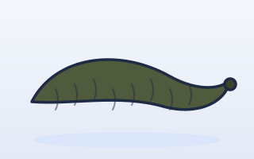

Fish › Walleye

Walleye
Sander vitreus
Confirmed in 41 waters near youDawn · dusk · night feeder
Active range55–75°F
Spawning40–52°F
FeedsLow light
EvidenceAgency
Documented activity
30°50°70°90°F
Today 65°F at Canoe Landing: inside the active range.
Documented habitat
Walleye live near or on the lake bottom and travel through open water in loosely formed schools.1 In clear water they stay deeper by day and move to the shallows at night.2 Agency source
Recommended bait

Leeches
Bait-cast or still fish from an anchored boat.
Nightcrawlers
Keep the bait near the bottom.
1 · Digital Field Guide
Merlin, Audubon, Seek, PictureThis: soft sage and cream, friendly sans, italic Latin names, attribute tiles.